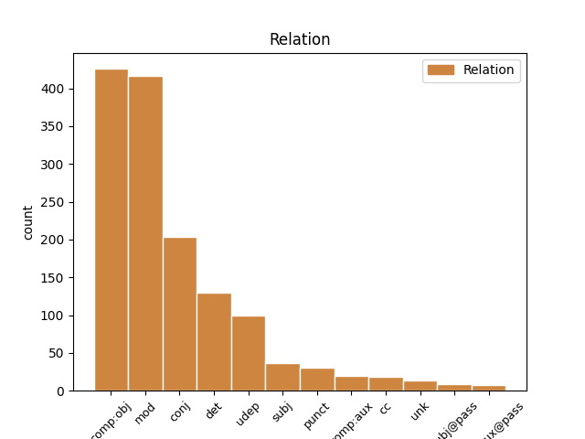
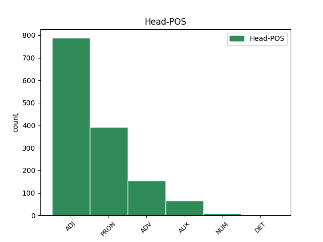
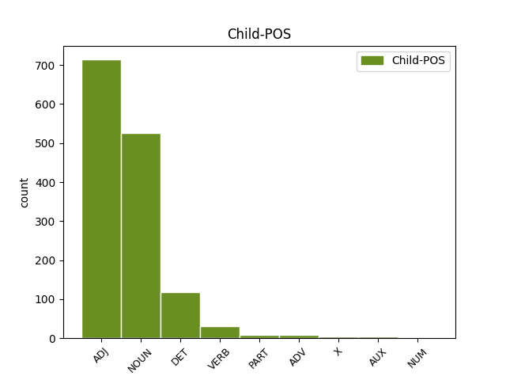

Distribution of features within this leaf



Agreement Rules sorted by frequency.
- When the dependent token is the direct object complements(comp:obj) of the head token, and the head token is PRON and the dependent token is NOUN.
1 कांग्रेस _ _ _ _ 0 _ _ _
2 ने _ _ _ _ 0 _ _ _
3 गांधी _ _ _ _ 0 _ _ _
4 के _ _ _ _ 0 _ _ _
5 साथ _ _ _ _ 0 _ _ _
6 अपने _ _ _ _ 0 _ _ _
7 रिश्ते _ _ _ _ 0 _ _ _
8 को _ _ _ _ 0 _ _ _
9 मजबूत _ _ _ _ 0 _ _ _
10 करने _ _ _ _ 0 _ _ _
11 में _ _ _ _ 0 _ _ _
12 कोई कोई PRON PRP Case=Nom|Number=Sing|Person=3|PronType=Prs 0 _ _ _
13 कसर कसर NOUN NN Case=Nom|Gender=Fem|Number=Sing|Person=3 12 comp:obj _ ChunkId=NP5|ChunkType=head|Tam=0|Translit=kasara|Vib=0
14 नहीं _ _ _ _ 0 _ _ _
15 छोड़ी _ _ _ _ 0 _ _ _
16 । _ _ _ _ 0 _ _ _
1 ७० _ _ _ _ 0 _ _ _
2 वर्षीय _ _ _ _ 0 _ _ _
3 इस _ _ _ _ 0 _ _ _
4 अहिंसावादी अहिंसावादी ADJ JJ Case=Acc 0 _ _ _
5 तिब्बती तिब्बती ADJ JJ Case=Acc 4 mod _ ChunkId=NP|ChunkType=child|Translit=tibbatī
6 नेता _ _ _ _ 0 _ _ _
7 ने _ _ _ _ 0 _ _ _
8 यह _ _ _ _ 0 _ _ _
9 भी _ _ _ _ 0 _ _ _
10 कहा _ _ _ _ 0 _ _ _
11 कि _ _ _ _ 0 _ _ _
12 वे _ _ _ _ 0 _ _ _
13 चीन _ _ _ _ 0 _ _ _
14 से _ _ _ _ 0 _ _ _
15 अलगाव _ _ _ _ 0 _ _ _
16 की _ _ _ _ 0 _ _ _
17 बात _ _ _ _ 0 _ _ _
18 नहीं _ _ _ _ 0 _ _ _
19 कर _ _ _ _ 0 _ _ _
20 रहे _ _ _ _ 0 _ _ _
21 हैं _ _ _ _ 0 _ _ _
22 बल्कि _ _ _ _ 0 _ _ _
23 वे _ _ _ _ 0 _ _ _
24 तो _ _ _ _ 0 _ _ _
25 चीनी _ _ _ _ 0 _ _ _
26 संविधान _ _ _ _ 0 _ _ _
27 के _ _ _ _ 0 _ _ _
28 दायरे _ _ _ _ 0 _ _ _
29 में _ _ _ _ 0 _ _ _
30 ही _ _ _ _ 0 _ _ _
31 तिब्बत _ _ _ _ 0 _ _ _
32 समस्या _ _ _ _ 0 _ _ _
33 का _ _ _ _ 0 _ _ _
34 हल _ _ _ _ 0 _ _ _
35 चाहते _ _ _ _ 0 _ _ _
36 हैं _ _ _ _ 0 _ _ _
37 । _ _ _ _ 0 _ _ _
1 दलाई _ _ _ _ 0 _ _ _
2 लामा _ _ _ _ 0 _ _ _
3 ने _ _ _ _ 0 _ _ _
4 कहा _ _ _ _ 0 _ _ _
5 कि _ _ _ _ 0 _ _ _
6 मैं _ _ _ _ 0 _ _ _
7 तिब्बती _ _ _ _ 0 _ _ _
8 समस्या _ _ _ _ 0 _ _ _
9 का _ _ _ _ 0 _ _ _
10 सार्थक सार्थक ADJ JJ Case=Nom 0 _ _ _
11 और _ _ _ _ 0 _ _ _
12 मान्य मान्य ADJ JJ Case=Nom 10 conj _ ChunkId=JJP2|ChunkType=head|Translit=mānya
13 हल _ _ _ _ 0 _ _ _
14 ढूंढ़ने _ _ _ _ 0 _ _ _
15 की _ _ _ _ 0 _ _ _
16 कोशिश _ _ _ _ 0 _ _ _
17 में _ _ _ _ 0 _ _ _
18 हूं _ _ _ _ 0 _ _ _
19 । _ _ _ _ 0 _ _ _
1 दूसरी दूसरा ADJ QO Case=Nom|Gender=Fem|Number=Sing|NumType=Ord 2 mod _ ChunkId=NP|ChunkType=child|Translit=dūsarī
2 ओर ओर ADV NST AdpType=Post|Case=Nom|Gender=Fem|Number=Sing|Person=3 0 _ _ _
3 पाकिस्तान _ _ _ _ 0 _ _ _
4 भारत _ _ _ _ 0 _ _ _
5 को _ _ _ _ 0 _ _ _
6 इस _ _ _ _ 0 _ _ _
7 परियोजना _ _ _ _ 0 _ _ _
8 की _ _ _ _ 0 _ _ _
9 सुरक्षा _ _ _ _ 0 _ _ _
10 का _ _ _ _ 0 _ _ _
11 आश्वासन _ _ _ _ 0 _ _ _
12 देता _ _ _ _ 0 _ _ _
13 रहा _ _ _ _ 0 _ _ _
14 है _ _ _ _ 0 _ _ _
15 । _ _ _ _ 0 _ _ _
1 इसलिए _ _ _ _ 0 _ _ _
2 मकानों _ _ _ _ 0 _ _ _
3 के _ _ _ _ 0 _ _ _
4 बनते _ _ _ _ 0 _ _ _
5 ही _ _ _ _ 0 _ _ _
6 दूसरे _ _ _ _ 0 _ _ _
7 चरण _ _ _ _ 0 _ _ _
8 में _ _ _ _ 0 _ _ _
9 ३६०० _ _ _ _ 0 _ _ _
10 वर्ग _ _ _ _ 0 _ _ _
11 फुट _ _ _ _ 0 _ _ _
12 क्षेत्र _ _ _ _ 0 _ _ _
13 में _ _ _ _ 0 _ _ _
14 हरे हरा ADJ JJC Case=Nom|Gender=Masc|Number=Plur 0 _ _ _
15 - _ _ _ _ 0 _ _ _
16 भरे भरा ADJ JJ Case=Nom|Gender=Masc|Number=Plur 14 comp:obj _ ChunkId=NP5|ChunkType=child|Translit=bhare
17 बगीचे _ _ _ _ 0 _ _ _
18 बनाए _ _ _ _ 0 _ _ _
19 जाएंगे _ _ _ _ 0 _ _ _
20 । _ _ _ _ 0 _ _ _
1 यह यह DET DEM Case=Nom|Number=Sing|Person=3|PronType=Dem 2 det _ ChunkId=NP|ChunkType=child|Translit=yaha
2 सब सब PRON PRP Case=Nom|Number=Plur|Person=3|PronType=Prs 0 _ _ _
3 हमारी _ _ _ _ 0 _ _ _
4 प्रतिबद्धता _ _ _ _ 0 _ _ _
5 , _ _ _ _ 0 _ _ _
6 श्रम _ _ _ _ 0 _ _ _
7 और _ _ _ _ 0 _ _ _
8 प्रयासों _ _ _ _ 0 _ _ _
9 से _ _ _ _ 0 _ _ _
10 संभव _ _ _ _ 0 _ _ _
11 हो _ _ _ _ 0 _ _ _
12 सकेगा _ _ _ _ 0 _ _ _
13 । _ _ _ _ 0 _ _ _
1 बिजनेस _ _ _ _ 0 _ _ _
2 मैनेजमेंट _ _ _ _ 0 _ _ _
3 पाठ्यक्रमों _ _ _ _ 0 _ _ _
4 में _ _ _ _ 0 _ _ _
5 प्रवेश _ _ _ _ 0 _ _ _
6 के _ _ _ _ 0 _ _ _
7 लिए _ _ _ _ 0 _ _ _
8 मिनिस्ट्री _ _ _ _ 0 _ _ _
9 ऑफ _ _ _ _ 0 _ _ _
10 ह्यूमन _ _ _ _ 0 _ _ _
11 रिसोर्स _ _ _ _ 0 _ _ _
12 डेवलपमेंट _ _ _ _ 0 _ _ _
13 से _ _ _ _ 0 _ _ _
14 मान्यता मान्यता NOUN NN Case=Nom|Gender=Fem|Number=Sing|Person=3 15 udep _ ChunkId=NP4|ChunkType=head|Tam=0|Translit=mānyatā|Vib=0
15 प्राप्त प्राप्त ADJ JJ Case=Nom 0 _ _ _
16 यह _ _ _ _ 0 _ _ _
17 परीक्षा _ _ _ _ 0 _ _ _
18 फरवरी _ _ _ _ 0 _ _ _
19 , _ _ _ _ 0 _ _ _
20 मई _ _ _ _ 0 _ _ _
21 , _ _ _ _ 0 _ _ _
22 सितंबर _ _ _ _ 0 _ _ _
23 व _ _ _ _ 0 _ _ _
24 दिसंबर _ _ _ _ 0 _ _ _
25 के _ _ _ _ 0 _ _ _
26 पहले _ _ _ _ 0 _ _ _
27 रविवार _ _ _ _ 0 _ _ _
28 को _ _ _ _ 0 _ _ _
29 वर्ष _ _ _ _ 0 _ _ _
30 में _ _ _ _ 0 _ _ _
31 चार _ _ _ _ 0 _ _ _
32 बार _ _ _ _ 0 _ _ _
33 अखिल _ _ _ _ 0 _ _ _
34 भारतीय _ _ _ _ 0 _ _ _
35 स्तर _ _ _ _ 0 _ _ _
36 पर _ _ _ _ 0 _ _ _
37 आयोजित _ _ _ _ 0 _ _ _
38 होती _ _ _ _ 0 _ _ _
39 है _ _ _ _ 0 _ _ _
40 । _ _ _ _ 0 _ _ _
1 इसके _ _ _ _ 0 _ _ _
2 बाद _ _ _ _ 0 _ _ _
3 सभी _ _ _ _ 0 _ _ _
4 नई नया ADJ JJ Case=Acc|Gender=Fem|Number=Plur 0 _ _ _
5 - _ _ _ _ 0 _ _ _
6 पुरानी पुराना ADJ JJ Case=Acc|Gender=Fem|Number=Plur 4 punct _ ChunkId=NP2|ChunkType=child|Translit=purānī
7 इमारतों _ _ _ _ 0 _ _ _
8 के _ _ _ _ 0 _ _ _
9 लिए _ _ _ _ 0 _ _ _
10 इसे _ _ _ _ 0 _ _ _
11 अनिवार्य _ _ _ _ 0 _ _ _
12 कर _ _ _ _ 0 _ _ _
13 दिया _ _ _ _ 0 _ _ _
14 जाएगा _ _ _ _ 0 _ _ _
15 । _ _ _ _ 0 _ _ _
1 वोल्कर _ _ _ _ 0 _ _ _
2 ने _ _ _ _ 0 _ _ _
3 कहा _ _ _ _ 0 _ _ _
4 कि _ _ _ _ 0 _ _ _
5 उन्हें _ _ _ _ 0 _ _ _
6 यह _ _ _ _ 0 _ _ _
7 पता _ _ _ _ 0 _ _ _
8 नहीं _ _ _ _ 0 _ _ _
9 था _ _ _ _ 0 _ _ _
10 कि _ _ _ _ 0 _ _ _
11 १८ _ _ _ _ 0 _ _ _
12 महीने _ _ _ _ 0 _ _ _
13 लंबी _ _ _ _ 0 _ _ _
14 जाँच _ _ _ _ 0 _ _ _
15 से _ _ _ _ 0 _ _ _
16 इस _ _ _ _ 0 _ _ _
17 विश्वस्तरीय _ _ _ _ 0 _ _ _
18 संस्था _ _ _ _ 0 _ _ _
19 का _ _ _ _ 0 _ _ _
20 घोटाला _ _ _ _ 0 _ _ _
21 कहाँ _ _ _ _ 0 _ _ _
22 तक _ _ _ _ 0 _ _ _
23 खुलेगा _ _ _ _ 0 _ _ _
24 और _ _ _ _ 0 _ _ _
25 वह _ _ _ _ 0 _ _ _
26 इसके _ _ _ _ 0 _ _ _
27 नेता _ _ _ _ 0 _ _ _
28 महासचिव _ _ _ _ 0 _ _ _
29 कोफी _ _ _ _ 0 _ _ _
30 अन्नान _ _ _ _ 0 _ _ _
31 की _ _ _ _ 0 _ _ _
32 कुर्सी _ _ _ _ 0 _ _ _
33 हिलाने _ _ _ _ 0 _ _ _
34 के _ _ _ _ 0 _ _ _
35 इतने इतना DET QF Case=Nom|Gender=Masc|Number=Sing 36 det _ ChunkId=NP14|ChunkType=child|Translit=itane
36 नज़दीक नजदीक ADV NST AdpType=Post|Case=Nom|Gender=Masc|Number=Sing|Person=3 0 _ _ _
37 पहुँच _ _ _ _ 0 _ _ _
38 जाएंगे _ _ _ _ 0 _ _ _
39 । _ _ _ _ 0 _ _ _
1 केंद्र _ _ _ _ 0 _ _ _
2 में _ _ _ _ 0 _ _ _
3 एनडीए _ _ _ _ 0 _ _ _
4 की _ _ _ _ 0 _ _ _
5 वाजपेयी _ _ _ _ 0 _ _ _
6 सरकार _ _ _ _ 0 _ _ _
7 द्वारा _ _ _ _ 0 _ _ _
8 दिल्ली _ _ _ _ 0 _ _ _
9 को _ _ _ _ 0 _ _ _
10 पूर्ण _ _ _ _ 0 _ _ _
11 राज्य _ _ _ _ 0 _ _ _
12 का _ _ _ _ 0 _ _ _
13 दर्जा _ _ _ _ 0 _ _ _
14 देने _ _ _ _ 0 _ _ _
15 संबधी _ _ _ _ 0 _ _ _
16 बिल बिल NOUN NN Case=Nom|Gender=Masc|Number=Sing|Person=3 17 mod _ ChunkId=NP7|ChunkType=head|Tam=0|Translit=bila|Vib=0
17 जो जो PRON PRP Case=Nom|Number=Sing|Person=3|PronType=Prs 0 _ _ _
18 संसद _ _ _ _ 0 _ _ _
19 में _ _ _ _ 0 _ _ _
20 पेश _ _ _ _ 0 _ _ _
21 हुआ _ _ _ _ 0 _ _ _
22 है _ _ _ _ 0 _ _ _
23 , _ _ _ _ 0 _ _ _
24 उसे _ _ _ _ 0 _ _ _
25 स्वीकृति _ _ _ _ 0 _ _ _
26 मिलनी _ _ _ _ 0 _ _ _
27 चाहिए _ _ _ _ 0 _ _ _
28 । _ _ _ _ 0 _ _ _
1 संयुक्त _ _ _ _ 0 _ _ _
2 राष्ट्र _ _ _ _ 0 _ _ _
3 सेमिनार _ _ _ _ 0 _ _ _
4 में _ _ _ _ 0 _ _ _
5 हिस्सा _ _ _ _ 0 _ _ _
6 लेकर _ _ _ _ 0 _ _ _
7 वे _ _ _ _ 0 _ _ _
8 बिहार _ _ _ _ 0 _ _ _
9 की _ _ _ _ 0 _ _ _
10 पहली पहला ADJ QO Case=Nom|Gender=Fem|Number=Sing|NumType=Ord 0 _ _ _
11 और _ _ _ _ 0 _ _ _
12 देश _ _ _ _ 0 _ _ _
13 की _ _ _ _ 0 _ _ _
14 पांचवीं _ _ _ _ 0 _ _ _
15 ग्रामीण _ _ _ _ 0 _ _ _
16 महिला महिला NOUN NN Case=Nom|Gender=Fem|Number=Sing|Person=3 10 conj _ ChunkId=NP7|ChunkType=head|Tam=0|Translit=mahilā|Vib=0
17 बन _ _ _ _ 0 _ _ _
18 जाती _ _ _ _ 0 _ _ _
19 । _ _ _ _ 0 _ _ _
1 विश्वसनीय _ _ _ _ 0 _ _ _
2 व _ _ _ _ 0 _ _ _
3 लाभ लाभ ADJ JJC Case=Nom|Gender=Masc|Number=Sing|Person=3 4 cc _ ChunkId=JJP2|ChunkType=child|Tam=0|Translit=lābha|Vib=0
4 रहित रहित ADJ JJ Case=Nom 0 _ _ _
5 जानकारी _ _ _ _ 0 _ _ _
6 बांटने _ _ _ _ 0 _ _ _
7 वाली _ _ _ _ 0 _ _ _
8 वेबसाइटों _ _ _ _ 0 _ _ _
9 का _ _ _ _ 0 _ _ _
10 मुख्य _ _ _ _ 0 _ _ _
11 अड्डा _ _ _ _ 0 _ _ _
12 अब _ _ _ _ 0 _ _ _
13 हमारा _ _ _ _ 0 _ _ _
14 मुल्क _ _ _ _ 0 _ _ _
15 बनने _ _ _ _ 0 _ _ _
16 वाला _ _ _ _ 0 _ _ _
17 है _ _ _ _ 0 _ _ _
18 । _ _ _ _ 0 _ _ _
1 मैं _ _ _ _ 0 _ _ _
2 स्पष्ट _ _ _ _ 0 _ _ _
3 कर कर VERB VM Case=Nom 4 comp:aux _ ChunkId=VGNN|ChunkType=head|Tam=0|Translit=kara|Vib=0_दे+ना
4 देना दे AUX VAUX Case=Nom|VerbForm=Inf 0 _ _ _
5 चाहता _ _ _ _ 0 _ _ _
6 हूं _ _ _ _ 0 _ _ _
7 कि _ _ _ _ 0 _ _ _
8 मेरा _ _ _ _ 0 _ _ _
9 दृष्टिकोण _ _ _ _ 0 _ _ _
10 अलगाववादी _ _ _ _ 0 _ _ _
11 नहीं _ _ _ _ 0 _ _ _
12 है _ _ _ _ 0 _ _ _
13 । _ _ _ _ 0 _ _ _
1 कुल्लू _ _ _ _ 0 _ _ _
2 के _ _ _ _ 0 _ _ _
3 सरवरी _ _ _ _ 0 _ _ _
4 बाजार _ _ _ _ 0 _ _ _
5 में _ _ _ _ 0 _ _ _
6 पीडब्लूडी _ _ _ _ 0 _ _ _
7 में _ _ _ _ 0 _ _ _
8 अपर _ _ _ _ 0 _ _ _
9 अभियंता _ _ _ _ 0 _ _ _
10 की _ _ _ _ 0 _ _ _
11 नौकरी _ _ _ _ 0 _ _ _
12 छोड़ _ _ _ _ 0 _ _ _
13 कर _ _ _ _ 0 _ _ _
14 ऐसे _ _ _ _ 0 _ _ _
15 ही _ _ _ _ 0 _ _ _
16 उपकरणों _ _ _ _ 0 _ _ _
17 के _ _ _ _ 0 _ _ _
18 निर्माण _ _ _ _ 0 _ _ _
19 कार्य _ _ _ _ 0 _ _ _
20 में _ _ _ _ 0 _ _ _
21 लग _ _ _ _ 0 _ _ _
22 गए _ _ _ _ 0 _ _ _
23 देवभूमि _ _ _ _ 0 _ _ _
24 शीट _ _ _ _ 0 _ _ _
25 मेटल _ _ _ _ 0 _ _ _
26 इंडस्ट्री _ _ _ _ 0 _ _ _
27 के _ _ _ _ 0 _ _ _
28 मालिक _ _ _ _ 0 _ _ _
29 रामकिशन _ _ _ _ 0 _ _ _
30 शर्मा _ _ _ _ 0 _ _ _
31 दावा _ _ _ _ 0 _ _ _
32 करते _ _ _ _ 0 _ _ _
33 हैं _ _ _ _ 0 _ _ _
34 कि _ _ _ _ 0 _ _ _
35 पहाड़ों _ _ _ _ 0 _ _ _
36 में _ _ _ _ 0 _ _ _
37 खासतौर _ _ _ _ 0 _ _ _
38 से _ _ _ _ 0 _ _ _
39 बर्फ _ _ _ _ 0 _ _ _
40 के _ _ _ _ 0 _ _ _
41 मौसम _ _ _ _ 0 _ _ _
42 में _ _ _ _ 0 _ _ _
43 जब _ _ _ _ 0 _ _ _
44 सर्दी _ _ _ _ 0 _ _ _
45 का _ _ _ _ 0 _ _ _
46 प्रकोप _ _ _ _ 0 _ _ _
47 चरम _ _ _ _ 0 _ _ _
48 पर _ _ _ _ 0 _ _ _
49 होता _ _ _ _ 0 _ _ _
50 है _ _ _ _ 0 _ _ _
51 और _ _ _ _ 0 _ _ _
52 पारा _ _ _ _ 0 _ _ _
53 कई _ _ _ _ 0 _ _ _
54 डिग्री डिग्री NOUN NN Case=Nom|Gender=Fem|Number=Plur|Person=3 55 mod _ ChunkId=NP21|ChunkType=head|Tam=0|Translit=ḍigrī|Vib=0
55 नीचे नीचे ADV NST AdpType=Post|Case=Nom|Gender=Masc|Number=Sing|Person=3 0 _ _ _
56 लुढ़क _ _ _ _ 0 _ _ _
57 जाता _ _ _ _ 0 _ _ _
58 है _ _ _ _ 0 _ _ _
59 तो _ _ _ _ 0 _ _ _
60 ऐसे _ _ _ _ 0 _ _ _
61 में _ _ _ _ 0 _ _ _
62 इलेक्ट्रॉनिक _ _ _ _ 0 _ _ _
63 भी _ _ _ _ 0 _ _ _
64 फेल _ _ _ _ 0 _ _ _
65 हो _ _ _ _ 0 _ _ _
66 जाते _ _ _ _ 0 _ _ _
67 हैं _ _ _ _ 0 _ _ _
68 । _ _ _ _ 0 _ _ _
1 इसके _ _ _ _ 0 _ _ _
2 अलावा _ _ _ _ 0 _ _ _
3 इस _ _ _ _ 0 _ _ _
4 पैकेज _ _ _ _ 0 _ _ _
5 के _ _ _ _ 0 _ _ _
6 तहत _ _ _ _ 0 _ _ _
7 एयरटेल _ _ _ _ 0 _ _ _
8 से _ _ _ _ 0 _ _ _
9 एयरटेल _ _ _ _ 0 _ _ _
10 पर _ _ _ _ 0 _ _ _
11 सभी _ _ _ _ 0 _ _ _
12 आउट आउट ADJ JJC Case=Nom 13 det _ ChunkId=NP5|ChunkType=child|Translit=āuṭa
13 गोइंग गोइंग ADJ JJ Case=Nom|Gender=Masc|Number=Sing|Person=3 0 _ _ _
14 लोकल _ _ _ _ 0 _ _ _
15 कॉल _ _ _ _ 0 _ _ _
16 30 _ _ _ _ 0 _ _ _
17 पैसे _ _ _ _ 0 _ _ _
18 प्रति _ _ _ _ 0 _ _ _
19 मिनट _ _ _ _ 0 _ _ _
20 होगीं _ _ _ _ 0 _ _ _
21 । _ _ _ _ 0 _ _ _
1 विवेक _ _ _ _ 0 _ _ _
2 ने _ _ _ _ 0 _ _ _
3 कहा _ _ _ _ 0 _ _ _
4 कि _ _ _ _ 0 _ _ _
5 वह _ _ _ _ 0 _ _ _
6 कोई _ _ _ _ 0 _ _ _
7 काम काम ADJ JJC Case=Nom|Gender=Masc|Number=Sing|Person=3 9 subj _ ChunkId=NP3|ChunkType=child|Tam=0|Translit=kāma|Vib=0
8 - _ _ _ _ 0 _ _ _
9 चलाऊ चलाऊ ADJ JJ Case=Nom 0 _ _ _
10 काम _ _ _ _ 0 _ _ _
11 नहीं _ _ _ _ 0 _ _ _
12 करना _ _ _ _ 0 _ _ _
13 चाहते _ _ _ _ 0 _ _ _
14 । _ _ _ _ 0 _ _ _
1 यह _ _ _ _ 0 _ _ _
2 छोटा छोटा ADJ JJ Case=Nom|Gender=Masc|Number=Sing 0 _ _ _
3 सा सा PART RP Case=Nom|Gender=Masc|Number=Sing 2 unk _ ChunkId=NP2|ChunkType=child|Translit=sā
4 सुंदर _ _ _ _ 0 _ _ _
5 गाँव _ _ _ _ 0 _ _ _
6 है _ _ _ _ 0 _ _ _
7 , _ _ _ _ 0 _ _ _
8 जहाँ _ _ _ _ 0 _ _ _
9 से _ _ _ _ 0 _ _ _
10 कई _ _ _ _ 0 _ _ _
11 ग्लेशियरों _ _ _ _ 0 _ _ _
12 की _ _ _ _ 0 _ _ _
13 यात्रा _ _ _ _ 0 _ _ _
14 की _ _ _ _ 0 _ _ _
15 जा _ _ _ _ 0 _ _ _
16 सकती _ _ _ _ 0 _ _ _
17 है _ _ _ _ 0 _ _ _
18 । _ _ _ _ 0 _ _ _
1 रिटायर्ड _ _ _ _ 0 _ _ _
2 फौजियों _ _ _ _ 0 _ _ _
3 ने _ _ _ _ 0 _ _ _
4 सेना _ _ _ _ 0 _ _ _
5 के _ _ _ _ 0 _ _ _
6 आमंत्रण _ _ _ _ 0 _ _ _
7 पर _ _ _ _ 0 _ _ _
8 बहुत _ _ _ _ 0 _ _ _
9 उत्साह _ _ _ _ 0 _ _ _
10 दिखाया _ _ _ _ 0 _ _ _
11 है _ _ _ _ 0 _ _ _
12 और _ _ _ _ 0 _ _ _
13 वे _ _ _ _ 0 _ _ _
14 बड़ी बड़ा X INTF Case=Acc|Gender=Fem|Number=Sing 15 mod _ ChunkId=NP6|ChunkType=child|Translit=baṛī
15 अच्छी अच्छा ADJ JJ Case=Acc|Gender=Fem|Number=Sing 0 _ _ _
16 तैयारी _ _ _ _ 0 _ _ _
17 के _ _ _ _ 0 _ _ _
18 साथ _ _ _ _ 0 _ _ _
19 ट्रेनिंग _ _ _ _ 0 _ _ _
20 के _ _ _ _ 0 _ _ _
21 काम _ _ _ _ 0 _ _ _
22 में _ _ _ _ 0 _ _ _
23 जुट _ _ _ _ 0 _ _ _
24 गए _ _ _ _ 0 _ _ _
25 हैं _ _ _ _ 0 _ _ _
26 । _ _ _ _ 0 _ _ _
1 पार्टी _ _ _ _ 0 _ _ _
2 कार्यालय _ _ _ _ 0 _ _ _
3 में _ _ _ _ 0 _ _ _
4 उमा _ _ _ _ 0 _ _ _
5 भारती _ _ _ _ 0 _ _ _
6 का _ _ _ _ 0 _ _ _
7 निलंबन _ _ _ _ 0 _ _ _
8 रद्द _ _ _ _ 0 _ _ _
9 किए कर VERB VM Aspect=Perf|Case=Acc|Number=Sing|VerbForm=Part 10 comp:aux@pass _ ChunkId=VGNN|ChunkType=head|Tam=yA|Translit=kie|Vib=या_जा+ना_का
10 जाने जा AUX VAUX Case=Acc|VerbForm=Inf 0 _ _ _
11 की _ _ _ _ 0 _ _ _
12 घोषणा _ _ _ _ 0 _ _ _
13 के _ _ _ _ 0 _ _ _
14 वक्त _ _ _ _ 0 _ _ _
15 मौजूद _ _ _ _ 0 _ _ _
16 बिहार _ _ _ _ 0 _ _ _
17 भाजपा _ _ _ _ 0 _ _ _
18 के _ _ _ _ 0 _ _ _
19 प्रदेशाध्यक्ष _ _ _ _ 0 _ _ _
20 गोपाल _ _ _ _ 0 _ _ _
21 नारायण _ _ _ _ 0 _ _ _
22 सिंह _ _ _ _ 0 _ _ _
23 ने _ _ _ _ 0 _ _ _
24 कहा _ _ _ _ 0 _ _ _
25 कि _ _ _ _ 0 _ _ _
26 लालू _ _ _ _ 0 _ _ _
27 के _ _ _ _ 0 _ _ _
28 खिलाफ _ _ _ _ 0 _ _ _
29 प्रदेश _ _ _ _ 0 _ _ _
30 में _ _ _ _ 0 _ _ _
31 पार्टी _ _ _ _ 0 _ _ _
32 को _ _ _ _ 0 _ _ _
33 एक _ _ _ _ 0 _ _ _
34 मारक _ _ _ _ 0 _ _ _
35 नेता _ _ _ _ 0 _ _ _
36 की _ _ _ _ 0 _ _ _
37 सख्त _ _ _ _ 0 _ _ _
38 जरूरत _ _ _ _ 0 _ _ _
39 थी _ _ _ _ 0 _ _ _
40 । _ _ _ _ 0 _ _ _
1 उन्होंने _ _ _ _ 0 _ _ _
2 यह _ _ _ _ 0 _ _ _
3 भी _ _ _ _ 0 _ _ _
4 साफ _ _ _ _ 0 _ _ _
5 किया _ _ _ _ 0 _ _ _
6 कि _ _ _ _ 0 _ _ _
7 कौन कौन DET WQ Case=Nom|PronType=Int 0 _ _ _
8 सा सा PART RP Case=Nom|Gender=Masc|Number=Sing 7 unk _ ChunkId=NP3|ChunkType=child|Translit=sā
9 परमाणु _ _ _ _ 0 _ _ _
10 कार्यक्रम _ _ _ _ 0 _ _ _
11 नागरिक _ _ _ _ 0 _ _ _
12 है _ _ _ _ 0 _ _ _
13 । _ _ _ _ 0 _ _ _
1 प्रधानमंत्री _ _ _ _ 0 _ _ _
2 ने _ _ _ _ 0 _ _ _
3 यह _ _ _ _ 0 _ _ _
4 भी _ _ _ _ 0 _ _ _
5 कहा _ _ _ _ 0 _ _ _
6 कि _ _ _ _ 0 _ _ _
7 पाकिस्तान _ _ _ _ 0 _ _ _
8 आतंकवादी _ _ _ _ 0 _ _ _
9 शिविरों _ _ _ _ 0 _ _ _
10 को _ _ _ _ 0 _ _ _
11 उखाड़ने उखाड VERB VM Case=Acc|VerbForm=Inf 12 mod _ ChunkId=VGNN|ChunkType=head|Tam=nA|Translit=ukhāṛane|Vib=ना
12 संबंधी संबंधी ADJ JJ Case=Acc 0 _ _ _
13 अपनी _ _ _ _ 0 _ _ _
14 प्रतिबद्धता _ _ _ _ 0 _ _ _
15 को _ _ _ _ 0 _ _ _
16 जल्द _ _ _ _ 0 _ _ _
17 पूरा _ _ _ _ 0 _ _ _
18 करे _ _ _ _ 0 _ _ _
19 । _ _ _ _ 0 _ _ _
1 दोनों _ _ _ _ 0 _ _ _
2 के _ _ _ _ 0 _ _ _
3 बीच _ _ _ _ 0 _ _ _
4 चली _ _ _ _ 0 _ _ _
5 एक _ _ _ _ 0 _ _ _
6 घंटे _ _ _ _ 0 _ _ _
7 की _ _ _ _ 0 _ _ _
8 बैठक _ _ _ _ 0 _ _ _
9 में _ _ _ _ 0 _ _ _
10 उन वह PRON PRP Case=Acc|Gender=Masc|Number=Sing|Person=3|Polite=Form|PronType=Prs 0 _ _ _
11 पर _ _ _ _ 0 _ _ _
12 व _ _ _ _ 0 _ _ _
13 उनके _ _ _ _ 0 _ _ _
14 परिवार परिवार NOUN NN Case=Acc|Gender=Masc|Number=Sing|Person=3 10 conj _ ChunkId=NP6|ChunkType=head|Tam=0|Translit=parivāra|Vib=0_पर
15 पर _ _ _ _ 0 _ _ _
16 हुए _ _ _ _ 0 _ _ _
17 हमलों _ _ _ _ 0 _ _ _
18 पर _ _ _ _ 0 _ _ _
19 भी _ _ _ _ 0 _ _ _
20 चर्चा _ _ _ _ 0 _ _ _
21 हुई _ _ _ _ 0 _ _ _
22 । _ _ _ _ 0 _ _ _
1 राष्ट्रपति _ _ _ _ 0 _ _ _
2 मुशर्रफ _ _ _ _ 0 _ _ _
3 ने _ _ _ _ 0 _ _ _
4 पकड़े _ _ _ _ 0 _ _ _
5 गए _ _ _ _ 0 _ _ _
6 आतंकी _ _ _ _ 0 _ _ _
7 का _ _ _ _ 0 _ _ _
8 नाम _ _ _ _ 0 _ _ _
9 नहीं _ _ _ _ 0 _ _ _
10 बताया _ _ _ _ 0 _ _ _
11 लेकिन _ _ _ _ 0 _ _ _
12 ' _ _ _ _ 0 _ _ _
13 द _ _ _ _ 0 _ _ _
14 पाकिस्तान _ _ _ _ 0 _ _ _
15 अब्जर्वर _ _ _ _ 0 _ _ _
16 ' _ _ _ _ 0 _ _ _
17 नामक _ _ _ _ 0 _ _ _
18 दैनिक _ _ _ _ 0 _ _ _
19 ने _ _ _ _ 0 _ _ _
20 एक _ _ _ _ 0 _ _ _
21 अधिकारी _ _ _ _ 0 _ _ _
22 के _ _ _ _ 0 _ _ _
23 हवाले _ _ _ _ 0 _ _ _
24 से _ _ _ _ 0 _ _ _
25 लिखा _ _ _ _ 0 _ _ _
26 है _ _ _ _ 0 _ _ _
27 कि _ _ _ _ 0 _ _ _
28 यह _ _ _ _ 0 _ _ _
29 और और ADJ JJ Case=Nom 30 mod _ ChunkId=NP8|ChunkType=child|Translit=aura
30 कोई कोई PRON PRP Case=Nom|Number=Sing|Person=3|PronType=Prs 0 _ _ _
31 नहीं _ _ _ _ 0 _ _ _
32 कुख्यात _ _ _ _ 0 _ _ _
33 अहमद _ _ _ _ 0 _ _ _
34 खलफान _ _ _ _ 0 _ _ _
35 घैलानी _ _ _ _ 0 _ _ _
36 है _ _ _ _ 0 _ _ _
37 । _ _ _ _ 0 _ _ _
1 लेकिन _ _ _ _ 0 _ _ _
2 मुकाबले _ _ _ _ 0 _ _ _
3 से _ _ _ _ 0 _ _ _
4 पचास _ _ _ _ 0 _ _ _
5 करोड़ करोड NUM QC Case=Acc|NumType=Card 0 _ _ _
6 ( _ _ _ _ 0 _ _ _
7 १.११ _ _ _ _ 0 _ _ _
8 करोड़ _ _ _ _ 0 _ _ _
9 डॉलर डॉलर NOUN NN Case=Acc|Gender=Masc|Number=Sing|Person=3 5 mod _ ChunkId=NP3|ChunkType=head|SpaceAfter=No|Tam=0|Translit=ḍôlara|Vib=0
10 ) _ _ _ _ 0 _ _ _
11 की _ _ _ _ 0 _ _ _
12 राशि _ _ _ _ 0 _ _ _
13 जुटाकर _ _ _ _ 0 _ _ _
14 क्रिकेटर _ _ _ _ 0 _ _ _
15 अपने _ _ _ _ 0 _ _ _
16 मकसद _ _ _ _ 0 _ _ _
17 में _ _ _ _ 0 _ _ _
18 कामयाब _ _ _ _ 0 _ _ _
19 हो _ _ _ _ 0 _ _ _
20 गए _ _ _ _ 0 _ _ _
21 । _ _ _ _ 0 _ _ _
1 बुज़ुर्ग _ _ _ _ 0 _ _ _
2 अपराधी _ _ _ _ 0 _ _ _
3 बच्चों _ _ _ _ 0 _ _ _
4 को _ _ _ _ 0 _ _ _
5 भी _ _ _ _ 0 _ _ _
6 छोटे छोटा ADJ JJC Case=Acc|Gender=Masc|Number=Sing 8 unk _ ChunkId=NP3|ChunkType=child|Translit=choṭe
7 - _ _ _ _ 0 _ _ _
8 मोटे मोटा ADJ JJ Case=Acc|Gender=Masc|Number=Sing 0 _ _ _
9 अपराध _ _ _ _ 0 _ _ _
10 में _ _ _ _ 0 _ _ _
11 लगाते _ _ _ _ 0 _ _ _
12 हैं _ _ _ _ 0 _ _ _
13 । _ _ _ _ 0 _ _ _
1 केंद्र _ _ _ _ 0 _ _ _
2 सरकार _ _ _ _ 0 _ _ _
3 ने _ _ _ _ 0 _ _ _
4 न्यूनतम _ _ _ _ 0 _ _ _
5 साझा _ _ _ _ 0 _ _ _
6 कार्यक्रम _ _ _ _ 0 _ _ _
7 ( _ _ _ _ 0 _ _ _
8 सीएमपी _ _ _ _ 0 _ _ _
9 ) _ _ _ _ 0 _ _ _
10 के _ _ _ _ 0 _ _ _
11 तहत _ _ _ _ 0 _ _ _
12 संचालित _ _ _ _ 0 _ _ _
13 की _ _ _ _ 0 _ _ _
14 जाने जा AUX VAUX Case=Acc|VerbForm=Inf 15 comp:aux@pass _ ChunkId=VGNN|ChunkType=child|Tam=nA|Translit=jāne|Vib=ना
15 वाली वाला AUX VAUX Case=Acc|Gender=Fem|Number=Plur 0 _ _ _
16 और _ _ _ _ 0 _ _ _
17 आम _ _ _ _ 0 _ _ _
18 जनता _ _ _ _ 0 _ _ _
19 से _ _ _ _ 0 _ _ _
20 जुड़ी _ _ _ _ 0 _ _ _
21 अपनी _ _ _ _ 0 _ _ _
22 स्टार _ _ _ _ 0 _ _ _
23 योजनाओं _ _ _ _ 0 _ _ _
24 की _ _ _ _ 0 _ _ _
25 कड़ी _ _ _ _ 0 _ _ _
26 निगरानी _ _ _ _ 0 _ _ _
27 करने _ _ _ _ 0 _ _ _
28 का _ _ _ _ 0 _ _ _
29 फैसला _ _ _ _ 0 _ _ _
30 किया _ _ _ _ 0 _ _ _
31 है _ _ _ _ 0 _ _ _
32 । _ _ _ _ 0 _ _ _
1 अंबानी _ _ _ _ 0 _ _ _
2 ने _ _ _ _ 0 _ _ _
3 कहा _ _ _ _ 0 _ _ _
4 कि _ _ _ _ 0 _ _ _
5 कंपनी _ _ _ _ 0 _ _ _
6 तेल _ _ _ _ 0 _ _ _
7 व _ _ _ _ 0 _ _ _
8 गैस _ _ _ _ 0 _ _ _
9 खोजने _ _ _ _ 0 _ _ _
10 के _ _ _ _ 0 _ _ _
11 मद _ _ _ _ 0 _ _ _
12 में _ _ _ _ 0 _ _ _
13 अगले अगला ADJ JJ Case=Acc|Gender=Masc|Number=Plur 14 mod _ ChunkId=NP6|ChunkType=child|Translit=agale
14 24 24 NUM QC Case=Acc|NumType=Card 0 _ _ _
15 से _ _ _ _ 0 _ _ _
16 30 _ _ _ _ 0 _ _ _
17 महीनों _ _ _ _ 0 _ _ _
18 में _ _ _ _ 0 _ _ _
19 2,500 _ _ _ _ 0 _ _ _
20 करोड़ _ _ _ _ 0 _ _ _
21 रुपये _ _ _ _ 0 _ _ _
22 और _ _ _ _ 0 _ _ _
23 निवेश _ _ _ _ 0 _ _ _
24 करेगी _ _ _ _ 0 _ _ _
25 । _ _ _ _ 0 _ _ _
1 उन्होंने _ _ _ _ 0 _ _ _
2 स्टेडियम _ _ _ _ 0 _ _ _
3 के _ _ _ _ 0 _ _ _
4 अंदर अंदर ADV NST AdpType=Post|Case=Nom|Gender=Masc|Number=Sing|Person=3 0 _ _ _
5 और _ _ _ _ 0 _ _ _
6 बाहर बाहर ADV NST AdpType=Post|Case=Nom|Gender=Masc|Number=Sing|Person=3 4 conj _ AltTag=ADV-NOUN|ChunkId=NP4|ChunkType=head|Translit=bāhara
7 तैनात _ _ _ _ 0 _ _ _
8 पुलिस _ _ _ _ 0 _ _ _
9 के _ _ _ _ 0 _ _ _
10 जवानों _ _ _ _ 0 _ _ _
11 पर _ _ _ _ 0 _ _ _
12 भी _ _ _ _ 0 _ _ _
13 पथराव _ _ _ _ 0 _ _ _
14 किया _ _ _ _ 0 _ _ _
15 । _ _ _ _ 0 _ _ _
1 पहले पहला NOUN NSTC AdpType=Post|Case=Nom|Gender=Masc|Number=Sing|Person=3 2 punct _ AltTag=nst-NOUN|ChunkId=NP|ChunkType=child|Translit=pahale
2 पहल पहल ADV NST AdpType=Post|Case=Nom|Gender=Fem|Number=Sing|Person=3 0 _ _ _
3 यह _ _ _ _ 0 _ _ _
4 एक _ _ _ _ 0 _ _ _
5 फ्रेंच _ _ _ _ 0 _ _ _
6 महल _ _ _ _ 0 _ _ _
7 था _ _ _ _ 0 _ _ _
8 जिसे _ _ _ _ 0 _ _ _
9 बाद _ _ _ _ 0 _ _ _
10 में _ _ _ _ 0 _ _ _
11 म्यूजियम _ _ _ _ 0 _ _ _
12 का _ _ _ _ 0 _ _ _
13 रूप _ _ _ _ 0 _ _ _
14 दे _ _ _ _ 0 _ _ _
15 दिया _ _ _ _ 0 _ _ _
16 गया _ _ _ _ 0 _ _ _
17 था _ _ _ _ 0 _ _ _
18 । _ _ _ _ 0 _ _ _
1 देहरादून _ _ _ _ 0 _ _ _
2 स्थित _ _ _ _ 0 _ _ _
3 जौलीग्रांट _ _ _ _ 0 _ _ _
4 सबसे _ _ _ _ 0 _ _ _
5 समीप समीप ADV NST AdpType=Post|Case=Nom|Gender=Masc|Number=Sing|Person=3 6 mod _ AltTag=ADV-NOUN|ChunkId=NP3|ChunkType=head|Translit=samīpa
6 स्थित स्थित ADJ JJ Case=Nom 0 _ _ _
7 हवाई _ _ _ _ 0 _ _ _
8 अड्डा _ _ _ _ 0 _ _ _
9 है _ _ _ _ 0 _ _ _
10 । _ _ _ _ 0 _ _ _
1 देर _ _ _ _ 0 _ _ _
2 शाम _ _ _ _ 0 _ _ _
3 इन _ _ _ _ 0 _ _ _
4 लोगों _ _ _ _ 0 _ _ _
5 ने _ _ _ _ 0 _ _ _
6 प्रेस _ _ _ _ 0 _ _ _
7 सम्मेलन _ _ _ _ 0 _ _ _
8 को _ _ _ _ 0 _ _ _
9 भी _ _ _ _ 0 _ _ _
10 संबोधित _ _ _ _ 0 _ _ _
11 किया _ _ _ _ 0 _ _ _
12 , _ _ _ _ 0 _ _ _
13 जिसमें _ _ _ _ 0 _ _ _
14 इन _ _ _ _ 0 _ _ _
15 लोगों _ _ _ _ 0 _ _ _
16 का _ _ _ _ 0 _ _ _
17 कहना _ _ _ _ 0 _ _ _
18 था _ _ _ _ 0 _ _ _
19 कि _ _ _ _ 0 _ _ _
20 आने _ _ _ _ 0 _ _ _
21 वाले _ _ _ _ 0 _ _ _
22 दो _ _ _ _ 0 _ _ _
23 सप्ताह _ _ _ _ 0 _ _ _
24 में _ _ _ _ 0 _ _ _
25 फैशन _ _ _ _ 0 _ _ _
26 वीक वीक NOUN NN Case=Nom|Gender=Masc|Number=Sing|Person=3 28 subj _ ChunkId=NP7|ChunkType=head|Tam=0|Translit=vīka|Vib=0
27 आने _ _ _ _ 0 _ _ _
28 वाला वाला AUX VAUX Case=Nom|Gender=Masc|Number=Sing|Person=3 0 _ _ _
29 है _ _ _ _ 0 _ _ _
30 जिस _ _ _ _ 0 _ _ _
31 पर _ _ _ _ 0 _ _ _
32 इस _ _ _ _ 0 _ _ _
33 कार्रवाई _ _ _ _ 0 _ _ _
34 का _ _ _ _ 0 _ _ _
35 सीधा _ _ _ _ 0 _ _ _
36 असर _ _ _ _ 0 _ _ _
37 पड़ेगा _ _ _ _ 0 _ _ _
38 । _ _ _ _ 0 _ _ _
1 कर्फ्यू _ _ _ _ 0 _ _ _
2 की _ _ _ _ 0 _ _ _
3 घोषणा _ _ _ _ 0 _ _ _
4 होते _ _ _ _ 0 _ _ _
5 ही _ _ _ _ 0 _ _ _
6 लोग _ _ _ _ 0 _ _ _
7 घरों _ _ _ _ 0 _ _ _
8 को _ _ _ _ 0 _ _ _
9 लौट _ _ _ _ 0 _ _ _
10 गए _ _ _ _ 0 _ _ _
11 और _ _ _ _ 0 _ _ _
12 जो _ _ _ _ 0 _ _ _
13 सड़क _ _ _ _ 0 _ _ _
14 पर _ _ _ _ 0 _ _ _
15 या _ _ _ _ 0 _ _ _
16 इधर इधर NOUN NSTC AdpType=Post|Case=Nom|Gender=Masc|Number=Sing|Person=3 18 cc _ AltTag=nst-NOUN|ChunkId=NP7|ChunkType=child|Translit=idhara
17 - _ _ _ _ 0 _ _ _
18 उधर उधर ADV NST AdpType=Post|Case=Nom|Gender=Masc|Number=Sing|Person=3 0 _ _ _
19 थे _ _ _ _ 0 _ _ _
20 , _ _ _ _ 0 _ _ _
21 उन्हें _ _ _ _ 0 _ _ _
22 पुलिस _ _ _ _ 0 _ _ _
23 ने _ _ _ _ 0 _ _ _
24 पहुंचा _ _ _ _ 0 _ _ _
25 दिया _ _ _ _ 0 _ _ _
26 । _ _ _ _ 0 _ _ _
1 पिछले _ _ _ _ 0 _ _ _
2 साल साल NOUN NN Case=Acc|Gender=Masc|Number=Sing|Person=3 14 udep _ ChunkId=NP|ChunkType=head|Tam=0|Translit=sāla|Vib=0
3 सरकार _ _ _ _ 0 _ _ _
4 द्वारा _ _ _ _ 0 _ _ _
5 आत्मसमर्पण _ _ _ _ 0 _ _ _
6 करने _ _ _ _ 0 _ _ _
7 वाले _ _ _ _ 0 _ _ _
8 माओवादी _ _ _ _ 0 _ _ _
9 उग्रवादियों _ _ _ _ 0 _ _ _
10 को _ _ _ _ 0 _ _ _
11 आम _ _ _ _ 0 _ _ _
12 माफी _ _ _ _ 0 _ _ _
13 दिए _ _ _ _ 0 _ _ _
14 जाने जा AUX VAUX Case=Acc|VerbForm=Inf 0 _ _ _
15 की _ _ _ _ 0 _ _ _
16 घोषणा _ _ _ _ 0 _ _ _
17 के _ _ _ _ 0 _ _ _
18 बाद _ _ _ _ 0 _ _ _
19 से _ _ _ _ 0 _ _ _
20 १०६१ _ _ _ _ 0 _ _ _
21 उग्रवादियों _ _ _ _ 0 _ _ _
22 ने _ _ _ _ 0 _ _ _
23 स्थानीय _ _ _ _ 0 _ _ _
24 प्रशासन _ _ _ _ 0 _ _ _
25 व _ _ _ _ 0 _ _ _
26 सुरक्षाबलों _ _ _ _ 0 _ _ _
27 के _ _ _ _ 0 _ _ _
28 सामने _ _ _ _ 0 _ _ _
29 हथियार _ _ _ _ 0 _ _ _
30 डाले _ _ _ _ 0 _ _ _
31 हैं _ _ _ _ 0 _ _ _
32 । _ _ _ _ 0 _ _ _
1 देश _ _ _ _ 0 _ _ _
2 के _ _ _ _ 0 _ _ _
3 हजारों हजार NUM QC Case=Acc|Number=Plur|NumType=Card 7 mod _ ChunkId=NP2|ChunkType=head|Translit=hajāroṁ
4 निजी _ _ _ _ 0 _ _ _
5 गैर _ _ _ _ 0 _ _ _
6 अनुदान _ _ _ _ 0 _ _ _
7 प्राप्त प्राप्त ADJ JJ Case=Acc 0 _ _ _
8 और _ _ _ _ 0 _ _ _
9 अल्पसंख्यक _ _ _ _ 0 _ _ _
10 कॉलेजों _ _ _ _ 0 _ _ _
11 के _ _ _ _ 0 _ _ _
12 मामले _ _ _ _ 0 _ _ _
13 में _ _ _ _ 0 _ _ _
14 सुप्रीम _ _ _ _ 0 _ _ _
15 कोर्ट _ _ _ _ 0 _ _ _
16 ने _ _ _ _ 0 _ _ _
17 बुधवार _ _ _ _ 0 _ _ _
18 को _ _ _ _ 0 _ _ _
19 प्रबंधन _ _ _ _ 0 _ _ _
20 कोटे _ _ _ _ 0 _ _ _
21 की _ _ _ _ 0 _ _ _
22 सीटें _ _ _ _ 0 _ _ _
23 निर्धारित _ _ _ _ 0 _ _ _
24 करने _ _ _ _ 0 _ _ _
25 और _ _ _ _ 0 _ _ _
26 इनके _ _ _ _ 0 _ _ _
27 उम्मीदवारों _ _ _ _ 0 _ _ _
28 के _ _ _ _ 0 _ _ _
29 चयन _ _ _ _ 0 _ _ _
30 के _ _ _ _ 0 _ _ _
31 तरीके _ _ _ _ 0 _ _ _
32 पर _ _ _ _ 0 _ _ _
33 अपना _ _ _ _ 0 _ _ _
34 फैसला _ _ _ _ 0 _ _ _
35 सुरक्षित _ _ _ _ 0 _ _ _
36 रखा _ _ _ _ 0 _ _ _
37 है _ _ _ _ 0 _ _ _
38 । _ _ _ _ 0 _ _ _
1 पाटिल _ _ _ _ 0 _ _ _
2 ने _ _ _ _ 0 _ _ _
3 कहा _ _ _ _ 0 _ _ _
4 कि _ _ _ _ 0 _ _ _
5 आईएमडीटी _ _ _ _ 0 _ _ _
6 एक्ट _ _ _ _ 0 _ _ _
7 को _ _ _ _ 0 _ _ _
8 समाप्त _ _ _ _ 0 _ _ _
9 किए _ _ _ _ 0 _ _ _
10 जाने जा AUX VAUX Case=Acc|VerbForm=Inf 11 mod _ ChunkId=VGNN|ChunkType=child|Tam=nA|Translit=jāne|Vib=ना
11 संबंधी संबंधी ADJ JJ Case=Acc 0 _ _ _
12 सुप्रीम _ _ _ _ 0 _ _ _
13 कोर्ट _ _ _ _ 0 _ _ _
14 के _ _ _ _ 0 _ _ _
15 फैसले _ _ _ _ 0 _ _ _
16 पर _ _ _ _ 0 _ _ _
17 पुनर्विचार _ _ _ _ 0 _ _ _
18 अपील _ _ _ _ 0 _ _ _
19 दायर _ _ _ _ 0 _ _ _
20 करने _ _ _ _ 0 _ _ _
21 की _ _ _ _ 0 _ _ _
22 सरकार _ _ _ _ 0 _ _ _
23 की _ _ _ _ 0 _ _ _
24 कोई _ _ _ _ 0 _ _ _
25 मंशा _ _ _ _ 0 _ _ _
26 नहीं _ _ _ _ 0 _ _ _
27 है _ _ _ _ 0 _ _ _
28 । _ _ _ _ 0 _ _ _
1 इनमें _ _ _ _ 0 _ _ _
2 पेट्रोलियम _ _ _ _ 0 _ _ _
3 और _ _ _ _ 0 _ _ _
4 प्राकृतिक _ _ _ _ 0 _ _ _
5 गैस _ _ _ _ 0 _ _ _
6 नियामक _ _ _ _ 0 _ _ _
7 बिल _ _ _ _ 0 _ _ _
8 को _ _ _ _ 0 _ _ _
9 मंत्रियों _ _ _ _ 0 _ _ _
10 के _ _ _ _ 0 _ _ _
11 समूह _ _ _ _ 0 _ _ _
12 ( _ _ _ _ 0 _ _ _
13 जीओएम _ _ _ _ 0 _ _ _
14 ) _ _ _ _ 0 _ _ _
15 के _ _ _ _ 0 _ _ _
16 पास _ _ _ _ 0 _ _ _
17 भेजने _ _ _ _ 0 _ _ _
18 तथा _ _ _ _ 0 _ _ _
19 गोधरा _ _ _ _ 0 _ _ _
20 में _ _ _ _ 0 _ _ _
21 साबरमती _ _ _ _ 0 _ _ _
22 एक्सप्रेस _ _ _ _ 0 _ _ _
23 अग्निकांड _ _ _ _ 0 _ _ _
24 मामले _ _ _ _ 0 _ _ _
25 की _ _ _ _ 0 _ _ _
26 जांच _ _ _ _ 0 _ _ _
27 कर _ _ _ _ 0 _ _ _
28 रही _ _ _ _ 0 _ _ _
29 उच्च उच्च ADJ JJC Case=Acc 0 _ _ _
30 स्तरीय स्तरीय ADJ JJ Case=Acc 29 comp:aux _ ChunkId=NP9|ChunkType=child|Translit=starīya
31 समिति _ _ _ _ 0 _ _ _
32 के _ _ _ _ 0 _ _ _
33 कार्यकाल _ _ _ _ 0 _ _ _
34 को _ _ _ _ 0 _ _ _
35 तीन _ _ _ _ 0 _ _ _
36 माह _ _ _ _ 0 _ _ _
37 बढ़ाने _ _ _ _ 0 _ _ _
38 जैसे _ _ _ _ 0 _ _ _
39 निर्णय _ _ _ _ 0 _ _ _
40 शामिल _ _ _ _ 0 _ _ _
41 हैं _ _ _ _ 0 _ _ _
42 । _ _ _ _ 0 _ _ _
1 श्रीकुमार _ _ _ _ 0 _ _ _
2 के _ _ _ _ 0 _ _ _
3 वकील _ _ _ _ 0 _ _ _
4 का _ _ _ _ 0 _ _ _
5 कहना _ _ _ _ 0 _ _ _
6 है _ _ _ _ 0 _ _ _
7 जब _ _ _ _ 0 _ _ _
8 गुजरात _ _ _ _ 0 _ _ _
9 सरकार _ _ _ _ 0 _ _ _
10 ने _ _ _ _ 0 _ _ _
11 पहले _ _ _ _ 0 _ _ _
12 तीन _ _ _ _ 0 _ _ _
13 बार _ _ _ _ 0 _ _ _
14 पदोन्नत _ _ _ _ 0 _ _ _
15 करते _ _ _ _ 0 _ _ _
16 समय _ _ _ _ 0 _ _ _
17 लंबित _ _ _ _ 0 _ _ _
18 आपराधिक _ _ _ _ 0 _ _ _
19 मामले _ _ _ _ 0 _ _ _
20 पर _ _ _ _ 0 _ _ _
21 विचार _ _ _ _ 0 _ _ _
22 नहीं _ _ _ _ 0 _ _ _
23 किया _ _ _ _ 0 _ _ _
24 , _ _ _ _ 0 _ _ _
25 तो _ _ _ _ 0 _ _ _
26 इस _ _ _ _ 0 _ _ _
27 बार _ _ _ _ 0 _ _ _
28 यह _ _ _ _ 0 _ _ _
29 मामला _ _ _ _ 0 _ _ _
30 इतना इतना DET QF Case=Nom|Gender=Masc|Number=Sing 31 det _ ChunkId=JJP2|ChunkType=child|Translit=itanā
31 महत्वपूर्ण महत्वपूर्ण ADJ JJ Case=Nom 0 _ _ _
32 क्यों _ _ _ _ 0 _ _ _
33 माना _ _ _ _ 0 _ _ _
34 जा _ _ _ _ 0 _ _ _
35 रहा _ _ _ _ 0 _ _ _
36 है _ _ _ _ 0 _ _ _
37 । _ _ _ _ 0 _ _ _
1 सम्मेलन _ _ _ _ 0 _ _ _
2 में _ _ _ _ 0 _ _ _
3 आए _ _ _ _ 0 _ _ _
4 विभिन्न _ _ _ _ 0 _ _ _
5 राज्यों _ _ _ _ 0 _ _ _
6 के _ _ _ _ 0 _ _ _
7 प्रतिनिधियों _ _ _ _ 0 _ _ _
8 ने _ _ _ _ 0 _ _ _
9 कहा _ _ _ _ 0 _ _ _
10 कि _ _ _ _ 0 _ _ _
11 दूर _ _ _ _ 0 _ _ _
12 - _ _ _ _ 0 _ _ _
13 दराज दराज ADV NST AdpType=Post|Case=Acc|Gender=Masc|Number=Sing|Person=3 0 _ _ _
14 या _ _ _ _ 0 _ _ _
15 हाशिए हाशिया NOUN NN Case=Acc|Gender=Masc|Number=Sing|Person=3 13 conj _ ChunkId=NP5|ChunkType=head|Tam=0|Translit=hāśie|Vib=0_का
16 के _ _ _ _ 0 _ _ _
17 गाँवों _ _ _ _ 0 _ _ _
18 में _ _ _ _ 0 _ _ _
19 रहने _ _ _ _ 0 _ _ _
20 वाले _ _ _ _ 0 _ _ _
21 बुजुर्गो _ _ _ _ 0 _ _ _
22 के _ _ _ _ 0 _ _ _
23 लिए _ _ _ _ 0 _ _ _
24 जिला _ _ _ _ 0 _ _ _
25 केंद्र _ _ _ _ 0 _ _ _
26 तक _ _ _ _ 0 _ _ _
27 आना _ _ _ _ 0 _ _ _
28 व्यवहारिक _ _ _ _ 0 _ _ _
29 रूप _ _ _ _ 0 _ _ _
30 से _ _ _ _ 0 _ _ _
31 संभव _ _ _ _ 0 _ _ _
32 नहीं _ _ _ _ 0 _ _ _
33 होगा _ _ _ _ 0 _ _ _
34 । _ _ _ _ 0 _ _ _
1 इससे _ _ _ _ 0 _ _ _
2 सीडी _ _ _ _ 0 _ _ _
3 में _ _ _ _ 0 _ _ _
4 निरंतरता _ _ _ _ 0 _ _ _
5 नहीं _ _ _ _ 0 _ _ _
6 है _ _ _ _ 0 _ _ _
7 और _ _ _ _ 0 _ _ _
8 तस्वीरें _ _ _ _ 0 _ _ _
9 भी _ _ _ _ 0 _ _ _
10 ऊपर ऊपर NOUN NSTC AdpType=Post|Case=Nom|Gender=Masc|Number=Sing|Person=3 12 unk _ AltTag=nst-NOUN|ChunkId=NP5|ChunkType=child|Translit=ūpara
11 - _ _ _ _ 0 _ _ _
12 नीचे नीचे ADV NST AdpType=Post|Case=Nom|Gender=Masc|Number=Sing|Person=3 0 _ _ _
13 उछलती _ _ _ _ 0 _ _ _
14 नजर _ _ _ _ 0 _ _ _
15 आई _ _ _ _ 0 _ _ _
16 हैं _ _ _ _ 0 _ _ _
17 । _ _ _ _ 0 _ _ _
Disagree Examples:
1 यहाँ _ _ _ _ 0 _ _ _
2 संग्रहालय _ _ _ _ 0 _ _ _
3 में _ _ _ _ 0 _ _ _
4 पुस्तकालय _ _ _ _ 0 _ _ _
5 , _ _ _ _ 0 _ _ _
6 दृश्य दृश्य ADJ JJC Case=Nom 8 punct _ ChunkId=NP4|ChunkType=child|Translit=dr̥śya
7 - _ _ _ _ 0 _ _ _
8 श्रृव्य श्रृव्य ADJ JJ Case=Acc 0 _ _ _
9 आर्काइव _ _ _ _ 0 _ _ _
10 , _ _ _ _ 0 _ _ _
11 कंप्यूटरीकृत _ _ _ _ 0 _ _ _
12 कक्ष _ _ _ _ 0 _ _ _
13 व _ _ _ _ 0 _ _ _
14 प्रजातीय _ _ _ _ 0 _ _ _
15 नमूनों _ _ _ _ 0 _ _ _
16 को _ _ _ _ 0 _ _ _
17 देखा _ _ _ _ 0 _ _ _
18 जाता _ _ _ _ 0 _ _ _
19 है _ _ _ _ 0 _ _ _
20 । _ _ _ _ 0 _ _ _
1 यह _ _ _ _ 0 _ _ _
2 मंगलवार _ _ _ _ 0 _ _ _
3 को _ _ _ _ 0 _ _ _
4 छोड़कर _ _ _ _ 0 _ _ _
5 हर _ _ _ _ 0 _ _ _
6 दिन _ _ _ _ 0 _ _ _
7 सुबह सुबह NOUN NN Case=Nom|Gender=Fem|Number=Sing|Person=3 8 mod _ ChunkId=NP4|ChunkType=head|Tam=0|Translit=subaha|Vib=0
8 7 7 NUM QC Case=Acc|NumType=Card 0 _ _ _
9 से _ _ _ _ 0 _ _ _
10 11 _ _ _ _ 0 _ _ _
11 और _ _ _ _ 0 _ _ _
12 3 _ _ _ _ 0 _ _ _
13 से _ _ _ _ 0 _ _ _
14 5 _ _ _ _ 0 _ _ _
15 बजे _ _ _ _ 0 _ _ _
16 शाम _ _ _ _ 0 _ _ _
17 तक _ _ _ _ 0 _ _ _
18 खुला _ _ _ _ 0 _ _ _
19 रहता _ _ _ _ 0 _ _ _
20 है _ _ _ _ 0 _ _ _
21 । _ _ _ _ 0 _ _ _
1 यह _ _ _ _ 0 _ _ _
2 सोमवार _ _ _ _ 0 _ _ _
3 को _ _ _ _ 0 _ _ _
4 छोड़कर _ _ _ _ 0 _ _ _
5 हर _ _ _ _ 0 _ _ _
6 दिन _ _ _ _ 0 _ _ _
7 सुबह सुबह NOUN NN Case=Nom|Gender=Fem|Number=Sing|Person=3 8 mod _ ChunkId=NP4|ChunkType=head|Tam=0|Translit=subaha|Vib=0
8 10.30 10.30 NUM QC Case=Acc|NumType=Card 0 _ _ _
9 से _ _ _ _ 0 _ _ _
10 6.30 _ _ _ _ 0 _ _ _
11 तक _ _ _ _ 0 _ _ _
12 खुला _ _ _ _ 0 _ _ _
13 रहता _ _ _ _ 0 _ _ _
14 है _ _ _ _ 0 _ _ _
15 । _ _ _ _ 0 _ _ _
1 इसके यह PRON PRP Case=Acc,Gen|Number=Sing|Person=3|Poss=Yes|PronType=Prs 0 _ _ _
2 आस आस NOUN NSTC AdpType=Post|Case=Nom|Gender=Masc|Number=Sing|Person=3 1 mod _ AltTag=nst-NOUN|ChunkId=NP|ChunkType=child|Translit=āsa
3 - _ _ _ _ 0 _ _ _
4 पास _ _ _ _ 0 _ _ _
5 की _ _ _ _ 0 _ _ _
6 दीवारें _ _ _ _ 0 _ _ _
7 कुछ _ _ _ _ 0 _ _ _
8 झुकी _ _ _ _ 0 _ _ _
9 हुई _ _ _ _ 0 _ _ _
10 सी _ _ _ _ 0 _ _ _
11 हैं _ _ _ _ 0 _ _ _
12 जिसके _ _ _ _ 0 _ _ _
13 कारण _ _ _ _ 0 _ _ _
14 इसे _ _ _ _ 0 _ _ _
15 हिंडोला _ _ _ _ 0 _ _ _
16 महल _ _ _ _ 0 _ _ _
17 कहा _ _ _ _ 0 _ _ _
18 जाता _ _ _ _ 0 _ _ _
19 है _ _ _ _ 0 _ _ _
20 . _ _ _ _ 0 _ _ _
1 कई _ _ _ _ 0 _ _ _
2 युद्ध _ _ _ _ 0 _ _ _
3 झेल _ _ _ _ 0 _ _ _
4 चुका _ _ _ _ 0 _ _ _
5 और _ _ _ _ 0 _ _ _
6 कितने _ _ _ _ 0 _ _ _
7 ही _ _ _ _ 0 _ _ _
8 राजा _ _ _ _ 0 _ _ _
9 और _ _ _ _ 0 _ _ _
10 नवाबों _ _ _ _ 0 _ _ _
11 के _ _ _ _ 0 _ _ _
12 उत्कर्ष _ _ _ _ 0 _ _ _
13 और _ _ _ _ 0 _ _ _
14 पतन _ _ _ _ 0 _ _ _
15 का _ _ _ _ 0 _ _ _
16 साक्षी _ _ _ _ 0 _ _ _
17 रहा _ _ _ _ 0 _ _ _
18 रणथम्भौर _ _ _ _ 0 _ _ _
19 किला _ _ _ _ 0 _ _ _
20 समुद्र _ _ _ _ 0 _ _ _
21 की _ _ _ _ 0 _ _ _
22 सतह _ _ _ _ 0 _ _ _
23 से _ _ _ _ 0 _ _ _
24 401 _ _ _ _ 0 _ _ _
25 मीटर मीटर NOUN NN Case=Nom|Gender=Masc|Number=Sing|Person=3 26 udep _ ChunkId=NP10|ChunkType=head|Tam=0|Translit=mīṭara|Vib=0
26 ऊँची ऊँचा ADJ JJ Case=Acc|Gender=Fem|Number=Sing 0 _ _ _
27 पहाड़ी _ _ _ _ 0 _ _ _
28 पर _ _ _ _ 0 _ _ _
29 बना _ _ _ _ 0 _ _ _
30 है _ _ _ _ 0 _ _ _
31 । _ _ _ _ 0 _ _ _